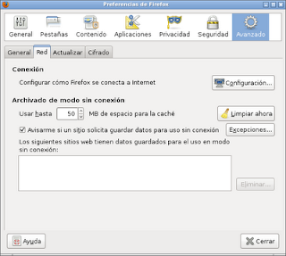
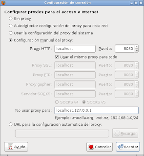

Conectarse a Internet por medio de un celular con android (proxoid)
Posted on sáb 29 mayo 2010 in Tutorial Linux • 1 min read
Como mencioné en el artículo anterior iniciaré una serie de artículos sobre distintas aplicaciones para conectarse a internet desde el celular.
La primera aplicación se llama proxoid, es un proxy http y el sitio de la aplicación lo pueden encontrar en el siguiente enlace.
La guía de instalación general lo pueden conseguir aquí y la dedicada a Linux aquí.
- Lo primero que hay que hacer es bajar el programa proxoid desde el market de Android.
- Al tener instalado el programa y tener configurado el udev en Linux y bajar el SDK para usar adb como se explicó en este artículo.
- Crear el tunel. Se ejecuta adb para reenviar los paquetes, el comando es el siguiente:
adb forward tcp:8080 tcp:8080
- Configurar el navegador para usar el proxy. Abra las preferencias de firefox como lo muestra la figura (la pestaña red darle clip al botón configuración):

Al presionar configurar se agregará el proxy como localhost y puerto 8080 como lo muestra la siguiente figura:

- Iniciar proxoid en el celular. Simplemente ejecutan proxoid y luego le dan start
- Al visitar whatismyip.com se mostrará que la IP que usa el navegador para internet es 201.240.16.229 y el equipo tiene un IP distinto al que muestra el navegador.
===
¡Haz tu donativo! Si te gustó el artículo puedes realizar un donativo con Bitcoin (BTC) usando la billetera digital de tu preferencia a la siguiente dirección: 17MtNybhdkA9GV3UNS6BTwPcuhjXoPrSzV
O Escaneando el código QR desde billetera: